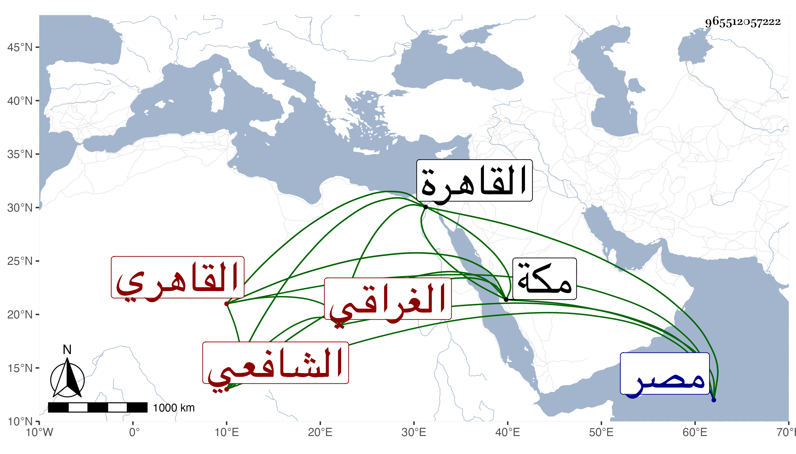

0902Sakhawi.DawLamic.ITO20230111-ara1.EIS1600.965512057222
Biography ID: 965512057222
1021
محمد بن أحمد بن خليل الشمس أبو عبد الله الغراقي بالمعجمة ثم المهملة الثقيلة ثم قاف نسبة لقرية من قرى مصر البحرية ثم القاهري الشافعي ويعرف بالغراقي . قدم القاهرة فسمع من العز بن جماعة والموفق الحنبلي جزء ابن نجيد ومسند عبد واشتغل في فنون ولازم البلقيني وبه انتفع وعليه تخرج وأذن له في الإفتاء والتدريس وأخذ الفرائض عن الكلائي وبرع فيها وفي الفقه والحساب ، وتصدر للإقراء بأماكن كمدرسة سعد الدين إبراهيم بن غراب بالقرب من جامع بشتك وجاور بمكة ودرس بها أيضا وانتفع به خلق في الفرائض وغيرها : وكان حسن الإلقاء للدرس خيرا دينا صدوقا ذا سمعت حسن ومهابة ووقار كثير التلاوة بحيث كان في مجاورته يتلو كل يوم وليلة ست ختمات ، وممن سمع منه هناك التقي ابن فهد وذكره في معجمه وكذا ذكره ابن قاضي شهبة في الشافعية وشيخنا في إنبائه وقال إنه اشتغل كثيرا وتمهر في الفرائض وشغل الناس فيها بالأزهر وأم به نيابة ، وكثرت طلبته مع الدين والخير وحسن السمت والتواضع والصبر على الطلبة وكان يقسم التنبيه والمنهاج فيقرن بينهما جميعا في مدة لطيفة . وقد سمع من العز ابن جماعة بمكة وحدث وجاور كثيرا وكان يعتمر في كل يوم أربع عمر ويختم في كل يوم ختمة . قلت : وكأن اقتصاره على الختم في اليوم الذي يعتمر فيه أربعا ليلتئم مع ما تقدم إن صح وهو في عقود المقريزي . مات في خامس شعبان سنة ست عشرة بالقاهرة عن نحو السبعين رحمه الله وإيانا .
